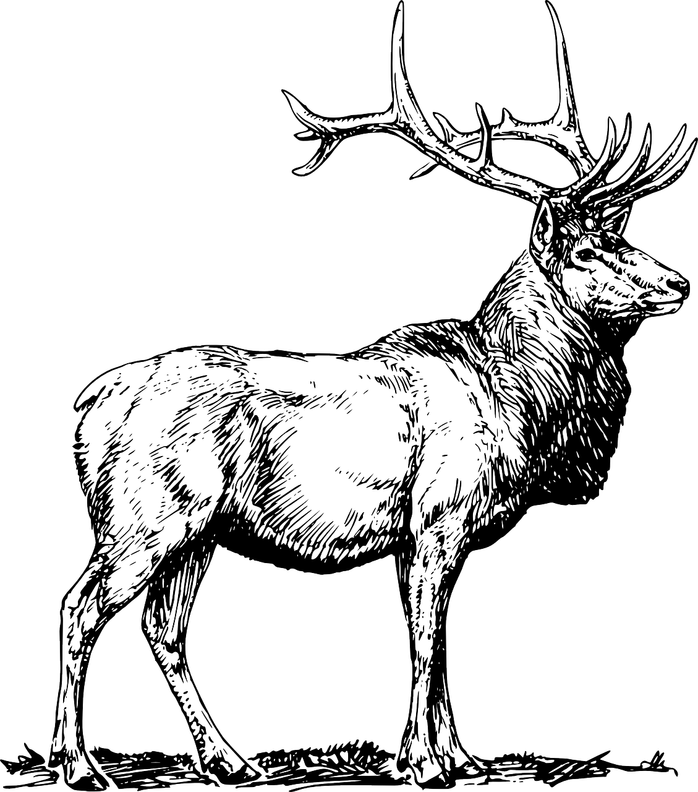

고양이
고양이(학명: Felis catus, 영어: Cat)는
고양이과에 속하는 야행성·육식성 포유동물.
[출처: 한국민족문화대백과사전(고양이)]
개
개(학명: Canis lupus familiaris, 영어: Dog)는 개과에 속하는 포유동물.
[출처: 한국민족문화대백과사전(개)]
토끼
토끼(학명: Leporidae, 영어: Rabbit)는 토끼과에 속하는 동물의 총칭.
[출처: 한국민족문화대백과사전(토끼)]

사슴
사슴(학명: Cervidae, 영어: Deer)는 사슴과에 속하는 동물의 총칭.
[출처: 한국민족문화대백과사전(사슴)]